🔍 Айналу денелері әлеміне қош келдің!
Жазық фигураны түзуден айналдырғанда пайда болған дене айналу денесі деп аталады. Мұндағы түзу айналу осі деп аталады. Мысалы, MPNK төртбұрышын m осінен айналдырғанда, 106-суретте кескінделген айналу денесі шығады.
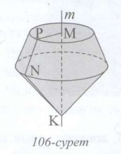
Айналу денесі ұғымы кеңістіктегі фигуралардың бұру деп аталатын қозғалыс түрімен тікелей байланысты.
m түзуінен айналдыра φ бұрышына бұру деп кеңістіктегі m түзуіне перпендикуляр әрбір жазықтықты оның m түзуімен қиылысу нүктесінен айналдыра φ бұрышына бұру орындалатын қозғалысты атайды (107-сурет).
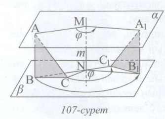
Бұру оның сағат тілі бағытымен немесе сағат тіліне қарсы бағытта саналатын бұру бұрышымен беріледі. Мысалы, есіктің немесе дөңгелектің осьтен айнала бұрылуы осылай орындалады.
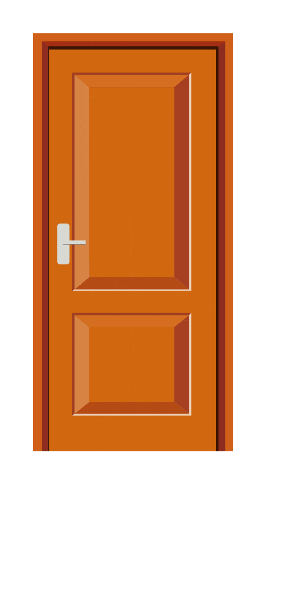 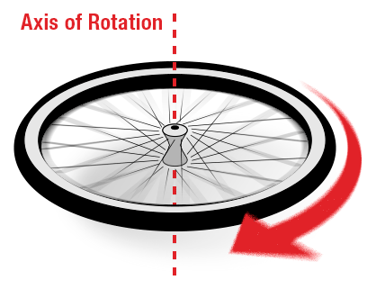
Кеңістіктегі осьтік симметрия - симметрия осінен айналдыра 180°-қа бұру.
1. Цилиндр және оның элементтері
Тақырыпты оқу барысында:
- айналу денелері ұғымдарын білесіңдер;
- цилиндрдің, оның элементтерінің анықтамаларын білесіңдер;
- цилиндрі және оның қималарын кескіндей аласыңдар;
- цилиндрдің элементтерін табуға берілген есептерді шығарасыңдар.
1. Цилиндр деген не?
Цилиндр — тіктөртбұрышты оның қабырғасынан айналдырғанда пайда болатын фигура. Күнделікті өмірдегі мысалдар: кола бөтелкесі, консерві банкасы, бағана.
 |
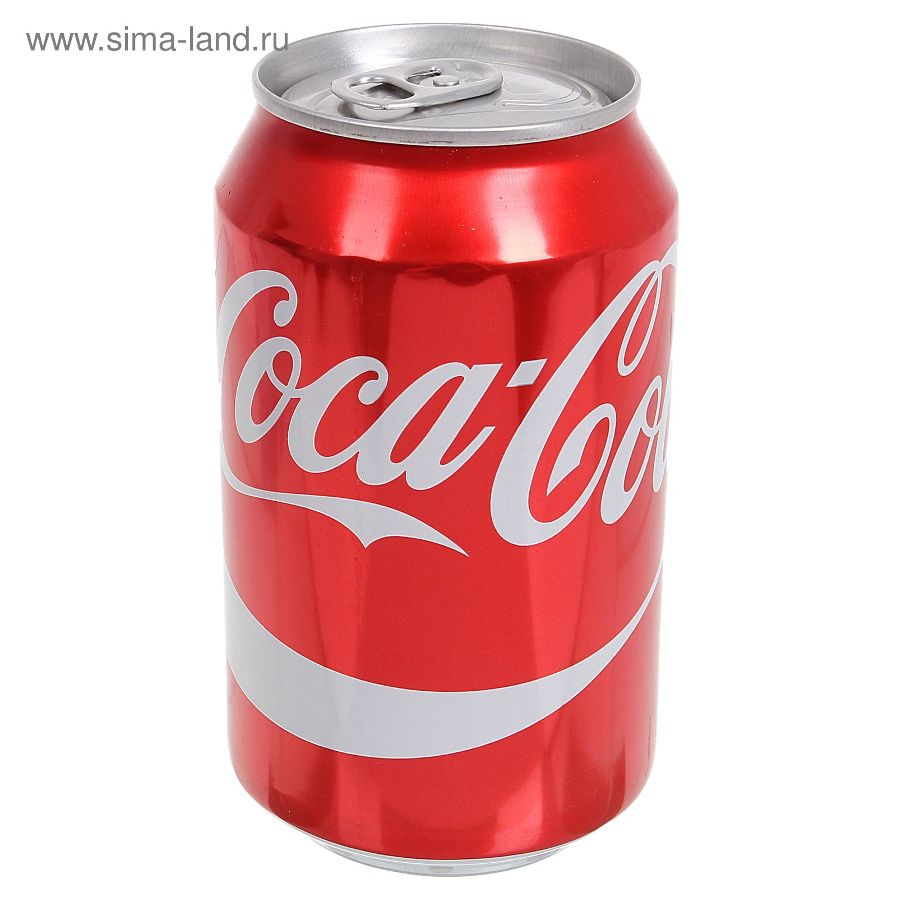 |
|
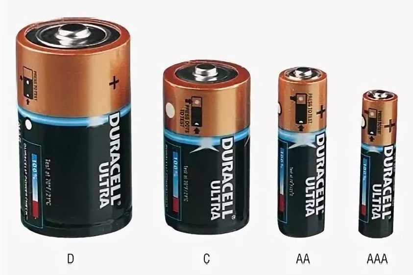 |
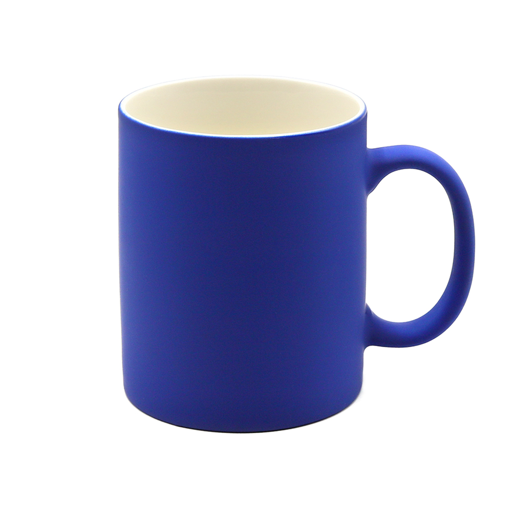 |
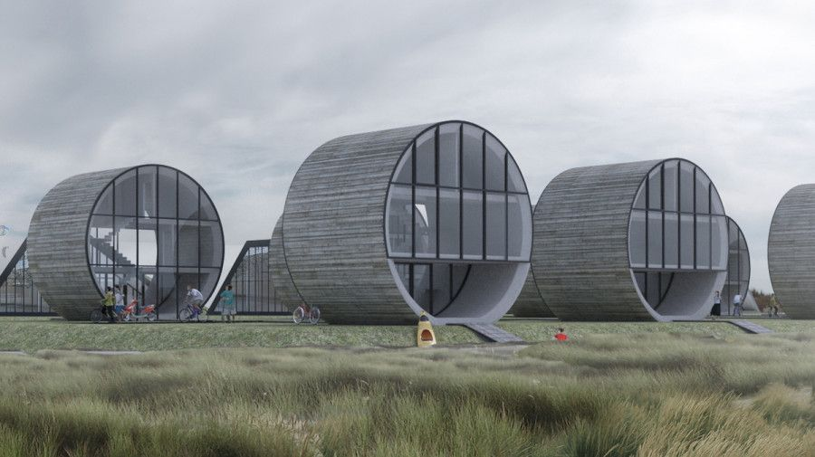 |
| анимациясы |
кола бөтелкесі |
консерв банкасы |
батарейка |
стақан |
ғимараттар |
2. Негізгі элементтері
108-суретте берілген
ABCD тіктөртбұрышын оның
CD қабырғасынан айналдырғанда шыққан цилиндрдің кескіні берілген.
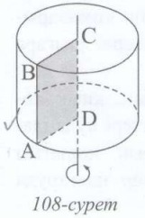
- Табаны — цилиндрдің екі дөңгелек негізі (жоғарғы және төменгі). CB және DA қабырғалары параллель жазықтықтарда жататын тең дөңгелектер сызады. Осы дөңгелектер цилиндрдің табандары
- Цилиндрдің осі — айналу осін қамтитын түзу немесе цилиндр табандарының центрлерін қосатын кесінді
- Биіктігі (h) — бір табанынан кез-келген нүктесінен екінші табанына перпендикуляр жүргізілген кесінді
- Жасаушысы (l) — AB кесіндісі және бүйір бетінің CD осіне параллель әрбір кесінді
- Бүйір беті — CD осіне параллель AB қабырғасы
- Толық беті — цилиндрдің табандары мен бүйір бетінен тұратын фигура
🎮 Интерактивті модель
3. Цилиндрдің қимасы
Цилиндрдің табанына перпендикуляр және оның центрінен өтетін қима оның осьтік қимасы деп аталады. 109, а-суреттегі ABCD тіктөртбұрышы.
Осьтік қимасы шаршы болатын цилиндр теңқабырғалы цилиндр деп аталады.
Цилиндрдің осіне перпендикуляр қимасы оның табанына тең дөңгелек болады (109, а-сурет). Бұл цилинрдің AB жасаушысының кез келген М нүктесі оның осінен цилиндрдің табанының радиусына тең қашықтықта болатынынан шығады.
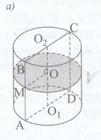
Цилиндрдің табанына перпендикуляр қимасы тіктөртбұрыш болады (109, ә-сурет).
Цилиндрдің жасаушысын қамтитын және цилиндрмен одан басқа ортақ нүкітесі болмайтын жазықтық цилиндрге жанама жазықтық деп аталады. 109, ә-суреттегі α жазықтығы.
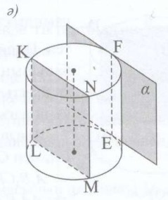
Цилиндрдің бүйір бетінің оның табанына параллель емес жазықтықпен қимасы эллипс болады (110-сурет). Мысалы, цилиндр пішінді көлбек стақандағы судың беті шекарасы эллипс болатын фигураны құрайды.
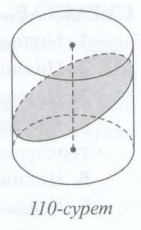
Мысал есептерге назар аударайық
1-есеп. Цилиндрдің биіктігі 8см-ге, ал табанының радиусы 5см-ге тең. Оның осіне параллель шаршы болатын қимасы жүргізілген. Цилиндрдің осі мен осы қима жазықтығының арасындағы қашықтықты табу керек (111-сурет).
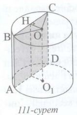
Жауабы: 3 см.
2-есеп. Цилиндрдің бүйір бетінің А және В нүктелерінен оның табан жазықтығының біріне жүргізілген АА1 және BB1 перпендикулярларының ұзындықтары, сәйкесінше, \(6\frac{3}{4}\) дм-ге және \(2\frac{1}{4}\) дм-ге тең. Цилиндр табанының радиусы 5 дм-ге, ал сол табанының О центрінен АА1В жазықтығына дейінгі қашықтық 4 дм-ге тең (112-сурет). АВ кесіндісінің ұзындығын табу керек.
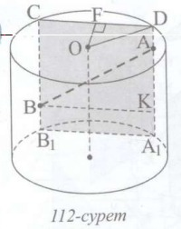
Жауабы: АВ = 7,5 дм.
💡 Қайталау сұрақтары:
- Цилиндр дегеніміз не?
- Цилиндрдің жасаушысы, табаны, биіктігі деп нені атайды?
- Цилиндрдің бүйір беті және толық беті деп нені айтады?
- Қай жағдайда цилиндрдің жазықтықпен қимасы: а) дөңгелек; ә) тіктөртбұрыш болады?
- Цилиндрдің осьтік қимасы дегеніміз не?
- Қандай цилиндрді теңқабырғалы цилиндр деп атайды?
🎬 Видео түсіндірме
2. Цилиндр бетінің ауданы
Тақырыпты оқу барысында:
- Цилиндрдің бүйір беті және толық беті, цилиндрдің жазбасы ұғымдарын білетін боласыңдар;
- цилиндрдің бүйір және толық беті аудандарының формулаларын білесіңдер;
- оларды қорытып шығарасыңдар және есептер шығаруда қолданасыңдар;
Егер призманың табандары цилиндрдің табандарына іштей сызылған болса, призма цилиндрге іштей сызылған деп аталады. Табанын цилиндрдің табанына іштей сызуға болатын тік призманы ғана цилиндрге іштей сызуға болады. Мысалы, 114,а-суретте цилиндрге іштей сызылған тікбұрышты параллелепипед кескінделген.
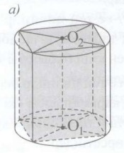
Егер призманың табандары цилиндрдің табандарына сырттай сызылған болса, призма цилиндрге сырттай сызылған деп аталады. Табанын цилиндрдің табанына сырттай сызуға болатын тік призманы ғана цилиндрге сырттай сызуға болады. Мысалы, 114,ә-суретте үшбұрышты тік призма цилиндрге сырттай сызылған.
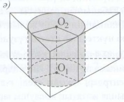
Цилиндрдің бүйір бетінің ауданына оған іштей сызылған дұрыс призманың табан қабырғаларының санын шексіз өсіргенде призманың бүйір бетінің ауданы ұмтылатын шама алынады.
Теорема. Цилиндрдің бүйір бетінің ауданы табан шеңберінің ұзындығы мен оның биіктігінің көбейтіндісіне тең:
Дәлелдеуі. Цилиндрге іштей дұрыс n-бұрышты призма сызайық (115-сурет).
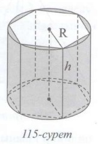
Оның биіктігі цилиндрдің биіктігіне, ал осы призманың бүйір бетінің ауданы оның табанының периметрі мен биіктігінің көбейтіндісіне тең. Призманың табаны шеңберге іштей сызылған дұрыс көпбұрыш болғандықтан, оның табан қабырғаларының санын шексіз өсіргенде көпбұрыштың периметрі шеңбердің 2πR ұзындығына ұмтылады. Сонда призманың бүйір бетінің ауданы 2πRh-қа тең шамаға ұмтылады.
Бүйір бет ауданы: Sб.б. = 2πRh
Мұндағы,
R - табанының радиусы,
h - цилиндрдің биіктігі.
Егер цилиндрді оның бүйір бетінің (116,а-сурет) жасаушысы бойымен қиып, барлық жасаушылары бір жазықтықта жататындай етіп жазсақ, онда цилиндрдің бүйір бетінің жазбасы деп аталатын тіктөртбұрышты аламыз (116,ә-сурет)
 |
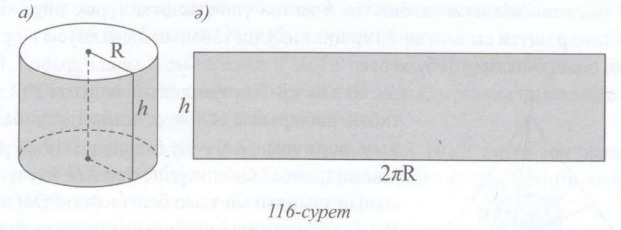 |
Цилиндрдің толық бетінің ауданы деп оның бүйір бетінің ауданы мен табандары аудандарының қосындысы аталады.
Толық бет ауданы: Sт.б. = Sб.б. + 2Sтаб. = 2πRh + 2πR2 = 2πR(R + h)
Егер цилиндрдің бір табаны пирамиданың табанына тиісті, ал басқасы пирамиданың әр бүйір жағымен жанасатын болса, онда цилиндр пирамидаға іштей сызылған деп аталады.
Пирамиданың табанына параллель қимасы оған ұқсас болады. Егер осы қимаға іштей шеңбер сызуға болса, онда пирамидаға іштей цилиндр сызуға болады. Мысалы, 118-суретте цилиндр табаны ромб болатын төртбұрышты пирамидаға іштей сызылған
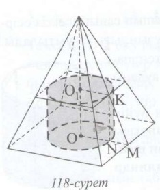
4. Формулалар
Бүйір бет ауданы: Sб.б. = 2πrh
Толық бет ауданы: Sт.б. = Sб.б. + 2Sтаб. = 2πrh + 2πr2 = 2πr(r + h)
Көлемі: V = Sтаб. • h = πr²h
Мысал есептерге назар аударайық
1-есеп. Цилиндрдің төменгі табанының центрі арқылы өтетінжазықтық оған 60° бұрышпен көлбеген. Осы жазықтық цилиндрдің жоғарғы табанын 90°-тық доғаны керетін, ұзындығы 10 см-ге тең хорда бойымен қияды. Цилиндрдің бүйір бетінің ауданын табу керек.
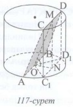
Жауабы: 50π√6 см².
2-есеп. Табаны a-ға, биіктігі h-қа тең үшбұрышты дұрыс пирамидаға цилиндр іштей сызылған. Егер цилиндрдің табанының радиусы r-ге тең болса, оның биіктігін табу керек
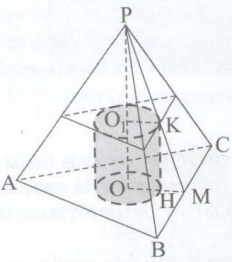
Жауабы: h-\(\frac{2hr\sqrt{3}}{a}\)
💡 Қайталау сұрақтары:
- Цилиндр бетінің ауданы деп нені айтады?
- Цилиндрдің бүйір бетінің және толық бетінің аудандарын қандай формулалармен табуға болады?
- Цилиндрдің бүйір бетінің жазбасы не болып табылады? Цилиндрдің толық бетінің жазбасын кескіндеңдер
🎬 Видео түсіндірме
3. Конус және оның элементтері
Тақырыпты оқу барысында:
- Конустың анықтамасын, оның элементтерін білесіңдер;
- Конусты және оның жазықтықпен қимасын кескіндейсіңдер;
- Конустың элементтерін табуға есептер шығарасыңдар;
1. Конус деген не?
Конус — тікбұрышты үшбұрышты оның бір катетінен айналдырғанда пайда болатын айналу денесі. Оның табаны — шеңбер, ал төбесі — нүкте. Мысалы, 122-суретте тікбұрышты ABC үшбұрышын оның ВС катетінен айналдырғанда шыққан конустың кескіні берілген
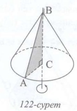
Күнделікті өмірдегі мысалдар: балмұздақ вафлиі, мерекелік қалпақ, жаңа жыл шыршасы.
| 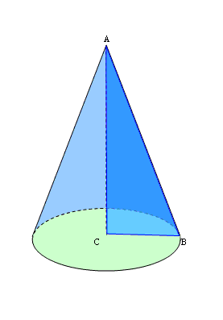 |
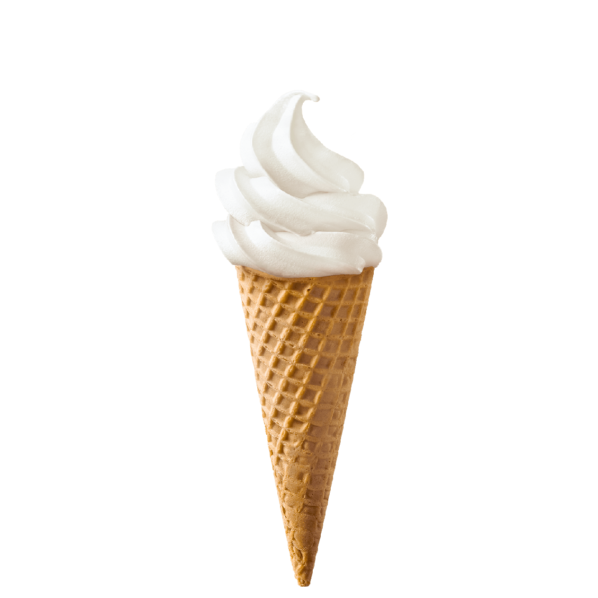 |
|
|
| Анимациясы |
Балмұздақ |
Қалпақ |
Шырша |
2. Негізгі элементтері
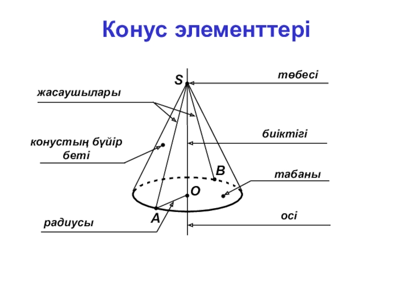
- Төбесі — S нүктесі конустың төбесі деп аталады;
- Табаны — конустың дөңгелек негізі;
- Биіктігі (h) — төбеден табан жазықтығына түсірілген перпендикуляр кесінді;
- Жасаушысы (l) — төбе мен табан шеңберінің кез келген нүктесін қосатын кесінді;
- Конустың осі — конустың айналу осін қамтитын түзу;
- Бүйір беті — жасаушысы айналып бүйір бетін сызады;
- Толық беті — конустың бүйір беті мен табанының бірігуінен тұратын фигура.
🎮 Интерактивті модель
3. Конустың қималары
Конустың төбесін қамтитын барлық қималары теңбүйірлі үшбұрыштар болады. Мысалы, 123-суреттегі PAB және PAC үшбұрыштары.
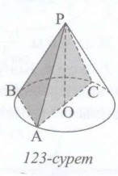
Конустың төбесі мен табанының центрін қамтитын қимасы конустың осьтік қимасы деп аталады. Осьтік қиммасы теңқабырғалы үшбұрыш болатын конус теңқабырғалы конус деп аталады.
Теорема. Конустың оның табанына параллель жазықтықпен қимасы дөңгелек болады.
Дәлелдеуі. Конустың табаны F, оған параллель қимасы - F1, O1 - PO биіктігінің қима жазықтығымен қиылысу нүктесі (124-сурет).
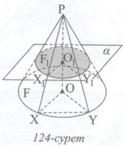
F1 және F фигуралары ұқсас болатынын дәлелдейік. Шынымен де, конустың F табанының қайсыбір Х нүктесіне РХ кесіндісі мен қима жазықтығының Х1 қиылысу нүктесі, ал Y нүктесіне Y1 нүктесі сәйкес келетін болсын. Сонда POXY пирамидасының оның табанына параллель жазықтықпен қимасының қасиеті бойынша: \[\frac{X_1Y_1}{XY} = \frac{PO_1}{PO} = k,\] мұндағы k - тұрақты сан. Конустың F табанының кез-келген X және Y нүктелері мен F1 қимасының оларға сәйкес келетін нүктелері үшін \[\frac{X_1Y_1}{XY} = k,\] теңдігі ақиқат болатындықтан, F1 ∼ F. Демек, конустың табанына параллель жазықтықпен қимасы дөңгелек болады.
Іштей сызылған призма және цилиндр
Бір табаны конустың табанында, ал басқа табанының төбелері оның бүйір бетінде жататын призманы конусқа іштей сызылған призма деп атайды.
Конустың оның табанына параллель қимасы дөңгелек болады, сондықтан, егре осы дөңгелекке іштей n-бұрыш сызуға болса, онда конусқа іштей n-бұрышты призма сызуға болады (127-сурет).

Бір табаны конустың табанында, ал басқа табанының шеңбері конустың бүйір бетінде жататын цилиндрді конусқа іштей сызылған цилиндр деп айтады (128-сурет).
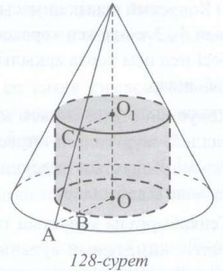
📐 Мысал есептер
1-есеп. Теңқабырғалы конустың төбесі мен табанының хордасы арқылы өтетін жазықтық табанымен 60° бұрыш жасайды. Конустың жасаушысы l-ге тең болса, оның табанының центрінен осы жазықтыққа дейінгі қашықтықты табу керек.
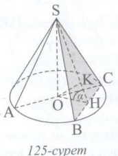
Жауабы: \(\frac{l \sqrt{3}}{4}\)
.
2-есеп. Конустың оның Р төбесін қамтитын, ауданы ең үлкен болатын қимасы салынған. Конустың жасаушысы 8 см-ге, ал оның осьтік қимасының Р төбесіндегі бұрышы α-ға тең болса (α - айнымалы шама), осы қиманың ауданын табу керек.
Жауабы: Егер 0° < α ≤ 90° болса, 32sinα см2; егер 90° < α < 180° болса, 32 дм2.
💡 Қайталау сұрақтары:
- Конус дегеніміз не?
- Конустың төбесі, жасаушысы, табаны, биіктігі деп не аталады?
- Конустың бүйір беті және толық беті дегеніміз не?
- Конустың осьтік қимасы дегенміз не?
- Қандай конус теңқабырғалы конус деп аталады?
🎬 Видео түсіндірме
4. Конус бетiнiң ауданы
Тақырыпты оқу барысында:
- Конустың бүйiр бетi және толық бетi, конустың жазбасы ұғымдарын білесіңдер;
- Сәйкес есептерге формулаларды қолдануды меңгересіңдер;
Конусқа іштей және сырттай сызылған пирамида
Егер пирамиданың төбесі конустың төбесімен беттессе, ал пирамиданың табаны конустың табанына іштей сызылған көпбұрыш болса, онда пирамида конусқа іштей сызылған деп аталады. Конусқа бүйір қырлары тең кез-келген пирамиданы іштей сызуға болады (129, а-сурет). Бұл ретте пирамиданың бүйір қырлары конустың жасаушылары болады.

Егер пирамиданың төбесі конустың төбесімен беттессе, ал пирамиданың табаны конустың табанына сырттай сызылған болса, онда пирамида конусқа сырттай сызылған деп аталады. Бұл ретте пирамиданың барлық бүйір жақтарының жазықтықтары конустың бүйір бетімен жанасады (129, ә-сурет).

Конустың бүйір бетінің ауданы
Конустың бүйір бетінің ауданы ретінде оған іштей сызылған дұрыс пирамиданың табан қабырғаларының санын шексіз өсіргенде пирамиданың бүйір бетінің ауданы ұмтылатын шама алынады.
Теорема. Конустың бүйір бетінің ауданы табан шеңбері ұзындығының жартысы мен жасаушысының көбейтіндісіне тең:
Бүйір бет ауданы: Sб.б. = πRl
мұндағы
R - конустың табанының радиусы,
l - жасаушысының ұзындығы.
Дәлелдеуі. Конусқа іштей дұрыс n-бұрышты пирамида салайық (130-сурет). Осы пирамиданың бүйір бетінің ауданы табанының жарты периметрі мен оның апофемасының көбейтіндісіне тең. Пирамиданың табан қабырғаларының n санын шексіз өсіргенде, оның бүйір бетінің ауданы πRl-ге тең шамаға ұмтылады.
🎮 Интерактивті модель
Егер конустың бүйір бетін оның жасаушысы бойымен қиып (131, а-сурет), барлық жасаушылары бір жазықтықта жататындай етіп жазсақ, онда конустың бүйір бетінің жазбасы деп аталатын дөңгелек сектор шығады (131, ә-сурет).

Конустың бүйір беті жазбасының ауданы конустың бүйір бетінің ауданына тең. Сектордың ауданының формуласы бойынша
Sкон.б.б. = \(\frac{πl²α}{360°}\)
мұндағы
l - жасаушының ұзындығы,
α - AB доғасының градустық өлшемі немесе оның центрлік бұрышының өлшемі.
Конустың толық бетінің ауданы
Конустың толық бетінің ауданы деп оның бүйір бетінің және табанының аудандарының қосындысын айтады. Конустың толық бетінің ауданы:
Толық бет ауданы: Sт.б. = Sб.б. + Sтаб. = πRl + πR² = πR(R + l)
R - конустың табанының радиусы, l - жасаушысының ұзындығы.
📘 Мысал есеп
Есеп. Конустың бүйір бетінің ауданы Sб.б. = 2πhd болатынын дәлелдеңдер, мұндағы h - конустың биіктігі, d - конустың жасаушысына жүргізілген, бір ұшы жасаушыда, екіншісі - конустың осінде жататын орта перпендикуляр кесіндісінің ұзындығы.

💡 Қайталау сұрақтары:
- Конустың толық беті дегеніміз не?
- Бүйір бетінің ауданы қалай есептеледі?
- Формуладағы r мен l нені білдіреді?
- Күнделікті өмірде бұл формулалар қалай қолданылады?
🎬 Видео түсіндірме
5. Қиық конус және оның элементтері
Тақырыпты оқу барысында:
- Қиық конустың анықтамасын білесіңдер;
- Оның негізгі элементтерімен танысасыңдар;
- Қиық конустың бет ауданы мен көлемін есептеуді үйренесіңдер;
- Қиық конусқа қатысты есептер шығарасыңдар.
1. Қиық конус деген не?
Қиық конус — тік конусты оның төбесі арқылы өтпейтін, табанына параллель емес жазықтықпен қиғанда пайда болатын дене. Мұндай дененің екі табаны да шеңбер және олар параллель жазықтықтарда жатады.
Қиық конус күнделікті өмірде жиі кездеседі: мысалы, гүл құмырасы, лампа қақпағы, шелек.
 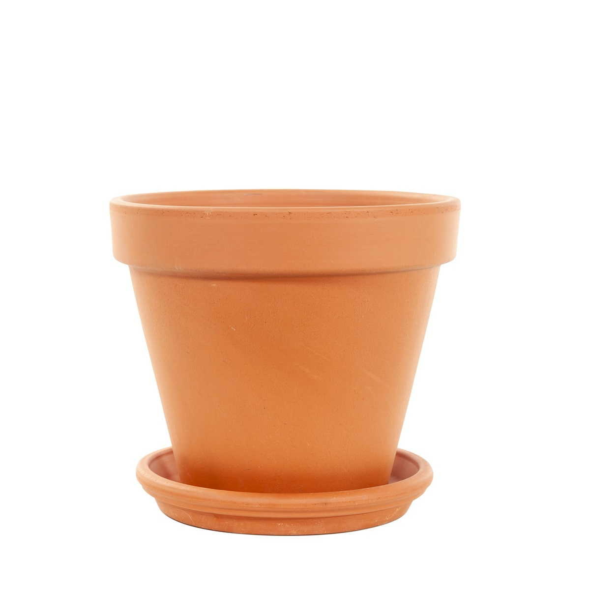
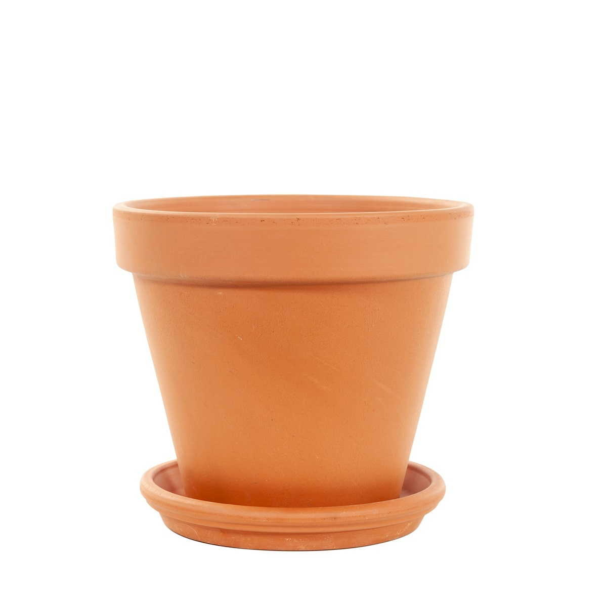
 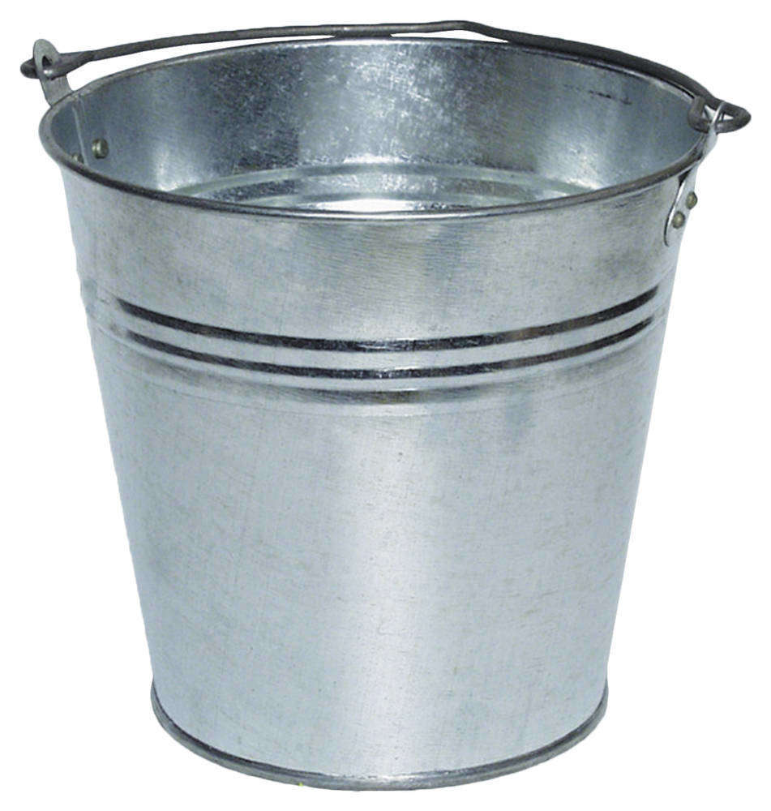
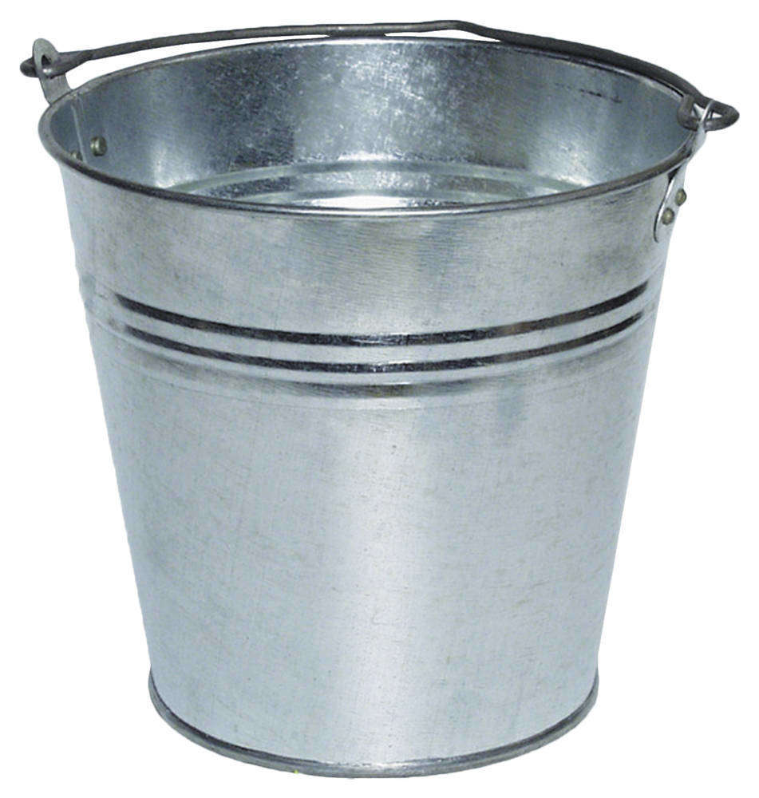
Анимациясы - Гүл құмырасы - Лампаның басы - Шелек
2. Қиық конустың элементтері
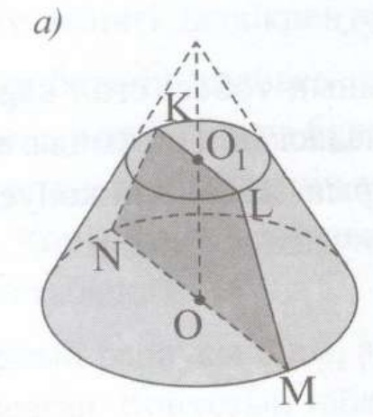
- Төменгі табан — үлкен радиусты шеңбер;
- Жоғарғы табан — кіші радиусты шеңбер;
- Биіктігі (h) — табандар арасындағы перпендикуляр қашықтық;
- Жасаушысы (l) — табандар шетін қосатын қисық қыр (қисықтың ұзындығы);
- Бүйір беті — қисық беттің ауданы;
- Толық беті — бүйір беті мен екі табан бетінің қосындысы.
🎮 Интерактивті модель
3. Формулалар
Мұндағы: \( R \) — үлкен табан радиусы, \( r \) — кіші табан радиусы, \( h \) — биіктік, \( l \) — жасаушы.
📘 Мысал есеп
Мысал: Төменгі табанының радиусы 6 см, жоғарғы табанының радиусы 3 см, жасаушысы 10 см болатын қиық конустың бүйір бетінің ауданын тап.
Жауабы: 90π см2
💡 Қайталау сұрақтары:
- Қиық конус дегеніміз не?
- Оның қандай элементтері бар?
- Қиық конустың бүйір бетінің ауданы қалай есептеледі?
- Қиық конустың көлемінің формуласы қандай?
- Қай денелер күнделікті өмірде қиық конусқа ұқсайды?
🎬 Видео түсіндірме
6. Қиық конус бетінің ауданы
Тақырыпты оқу барысында:
- Қиық конустың бүйір және толық бетінің ауданы ұғымдарын меңгересіңдер;
- Жазбаны түсініп, сәйкес формулаларды қолдана аласыңдар;
- Қиық конусқа қатысты есептерді шығара аласыңдар.
1. Қиық конус бетінің ауданы туралы түсінік
Қиық конустың беті — оның бүйір беті мен екі табан беттерінен тұрады. Оның бүйір бетінің ауданы — қисық беттің ауданы, ал толық бетінің ауданы осы бүйір бет пен екі табанның аудандарының қосындысы.
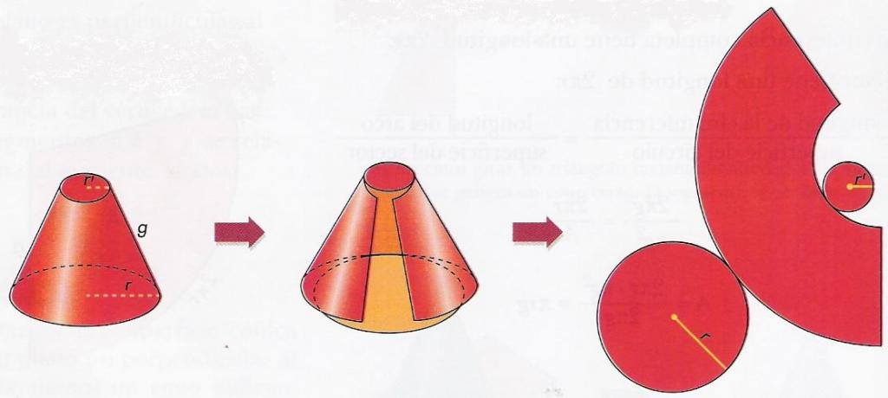
2. Формулалар
Бүйір бетінің ауданы:
Sб.б. = πl(R + r)
Толық бетінің ауданы:
Sт.б. = πl(R + r) + πR2 + πr2
Мұндағы R — үлкен табан радиусы, r — кіші табан радиусы, l — жасаушының ұзындығы.
3. Жазбасы
Қиық конустың бүйір бетінің жазбасы — екі концентрлік доғадан тұратын сақиналы сектор түрінде болады. Бұл сектордың сыртқы доғасы үлкен табан шеңберінің ұзындығына, ал ішкі доғасы — кіші табан шеңберінің ұзындығына тең болады.
Жазбаның ауданы:
Sжазба = πl(R + r)
Бұл мән дәл бүйір бетінің ауданына тең болады.
📘 Мысал есеп
Мысал: Қиық конустың үлкен табанының радиусы 7 см, кіші табанының радиусы 4 см, жасаушысы 10 см. Қиық конустың бүйір бетінің ауданын тап.
Жауабы: 110π см2
💡 Қайталау сұрақтары:
- Қиық конустың бүйір бетінің ауданы қалай есептеледі?
- Жазба дегеніміз не және ол қалай құрылады?
- Қиық конустың толық бетінің формуласы қандай?
- Мысал есебінде қандай формула қолданылды?
🎬 Видео түсіндірме